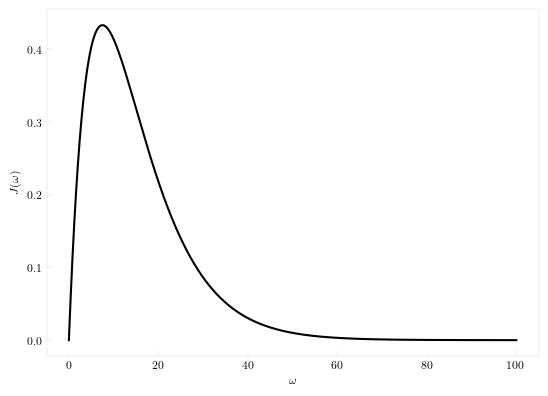
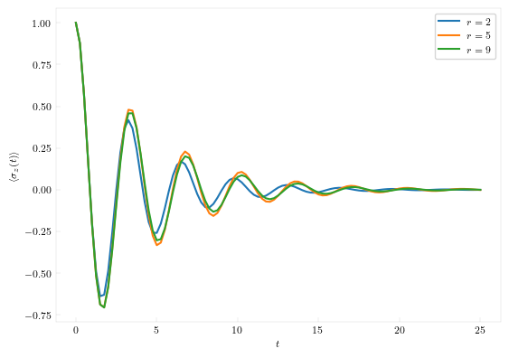

Numerically Exact Path Integral Approaches
The family of methods based on Quasi-Adiabatic Propagator Path Integral (QuAPI) is a family of numerically exact non-perturbative techniques for simulating a quantum system interacting with a harmonic environment. It simulates the reduced density matrix of an n-level quantum system using path integrals and the harmonic bath is incorporated through the Feynman-Vernon influence functional. The tracing out of the harmonic bath leads to a non-Markovian memory, which is used as a convergence parameter.
While at a first glance, the restriction to harmonic environments may seem arbitrarily limiting, it is actually quite general. Under the Gaussian response theory, when the environment is large and has enough "independent" degrees of freedom, the impact of an atomistically-described environment can be mapped onto a bath of harmonic oscillators with given frequencies and coupling strengths. Together these frequencies and couplings are described through the spectral density of the solvent which is given by
\[J(\omega) = \frac{\pi}{2} \sum_j \frac{c_j^2}{\omega_j}\delta\left(\omega-\omega_j\right).\]
The full system-harmonic environment Hamiltonian is then given by
\[\hat{H} = \hat{H}_0 + \hat{H}_\text{env}\\ \hat{H}_\text{env} = \sum_j \frac{p_j^2}{2} + \frac{1}{2}\omega_j^2\left(x_j - \frac{c_j}{\omega_j^2}\hat{s}\right)^2,\]
where $\hat{s}$ is the system operator that interacts with the environment.
The most common prototypical model problem of open quantum systems is the spin-boson problem. We will illustrate the approach taken by QuantumDynamics to make the various methods compatible with each other by demonstrating how the same basic setup works for all the basic methods.
The basic steps involved for these simulations are
- Define the system
- Define the Hamiltonian
- Define the spectral density corresponding to the solvent
- Specify the temperature
- Obtain the short-time propagators that are used to construct the path integral
- Build on top of the short-time propagators using the Feynman-Vernon influence functional.
In this tutorial, we will show how to use the different methods of the QuAPI family to obtain results for a single parameter. This side-by-side use of all the algorithms serve to emphasize the similarity of the APIs involved.
using QuantumDynamics
H0 = Utilities.create_tls_hamiltonian(; ϵ=0.0, Δ=2.0) # 1.1 Define the system Hamiltonian
Jw = SpectralDensities.ExponentialCutoff(; ξ=0.1, ωc=7.5) # 1.2 Define the spectral density
β = 5.0 # 1.3 Inverse temperatureLet us plot the spectral density. Assuming that you are using the Plots.jl library, the following code will work:
ω = 0:0.1:100
plot(ω, Jw.(ω), lw=2, label="")
xlabel!(L"\omega")
ylabel!(L"J(\omega)")
Next, we calculate the short-time forward-backward propagators, which require us to define the time-step and number of steps of simulation.
dt = 0.25
ntimes = 100
fbU = Propagators.calculate_bare_propagators(; Hamiltonian=H0, dt=dt, ntimes=ntimes)Iterative Quasi-Adiabatic propagator Path Integral (QuAPI)
Finally, the methods incorporate the influence functional on top of the propagator. First, we demonstrate the basic QuAPI algorithm (QuAPI review) at different memory lengths, kmax. The exact method can also be used with filtering if the optional argument of extraargs of type QuAPI.QuAPIArgs is provided.
ρ0 = [1.0+0.0im 0; 0 0]
sigma_z = []
kmax = [2,5,9]
time = Vector{Float64}()
for k in kmax
@time t, ρs = QuAPI.propagate(; fbU=fbU, Jw=[Jw], β=β, ρ0=ρ0, dt=dt, ntimes=ntimes, kmax=k)
global time = t
push!(sigma_z, real.(ρs[:,1,1] .- ρs[:,2,2]))
end
Time-Evolving Matrix Product Operator (TEMPO)
Recently ideas of tensor network have been used to make path integral calculations more efficient. The correlation between the time-points decrease with the temporal separation between them. This allows for significantly compressed matrix product state (MPS) representation of the so-called path-amplitude tensor. The influence functional is represented as a matrix product operator and applied to this path-amplitude MPS to incorporate the effect of the baths. The interface is kept consistent with the other path integral methods like QuAPI. The MPO-MPS applications is controlled through a cutoff threshold and a maxdim threshold. The method used for applying an MPO to an MPS can be chosen to be one of naive, densitymatrix, or fit. These settings are passed as extraargs, which is an object of TNPI.TNPIArgs. By default, cutoff=1e-8, maxdim=50 and method=naive. These ideas have been outlined in TEMPO. The implementation follows the details of TNPI incorporating multiple baths and the QuAPI splitting.
ρ0 = [1.0+0.0im 0; 0 0]
sigma_z_TEMPO = []
kmax = [2,5,9]
time = Vector{Float64}()
for k in kmax
@time t, ρs = TEMPO.propagate(; fbU=fbU, Jw=[Jw], β=β, ρ0=ρ0, dt=dt, ntimes=ntimes, kmax=k)
global time = t
push!(sigma_z_TEMPO, real.(ρs[:,1,1] .- ρs[:,2,2]))
end
Transfer Tensor Method
Since the iteration regime can be quite costly, we have implemented the non-Markovian transfer tensor method (TTM) (TTM). This is invoked in the following manner:
ρ0 = [1.0+0.0im 0; 0 0]
sigma_z = []
rmax = [2,5,9]
time = Vector{Float64}()
for r in rmax
@time t, ρs = TTM.propagate(; fbU=fbU, Jw=[Jw], β=β, ρ0=ρ0, dt=dt, ntimes=ntimes, rmax=r, extraargs=QuAPI.QuAPIArgs(), path_integral_routine=QuAPI.build_augmented_propagator)
global time = t
push!(sigma_z, real.(ρs[:,1,1] .- ρs[:,2,2]))
endThe TTM.propagate method, in addition to the usual arguments, takes a function to build the initial propagators for the full-path regime of the simulation. In this case, we are using QuAPI to build the propagators in the full-path segment, as indicated by path_integral_routine=QuAPI.build_augmented_propagator. Other possible choices are path_integral_routine=Blip.build_augmented_propagator, path_integral_routine=TEMPO.build_augmented_propagator and path_integral_routine=PCTNPI.build_augmented_propagator. Also notice that because each of these path_integral_routines take different extraargs, it is not possible to provide a default. Here, it is necessary for the extraargs to be provided and it needs to be consistent with the path_integral_routine.
